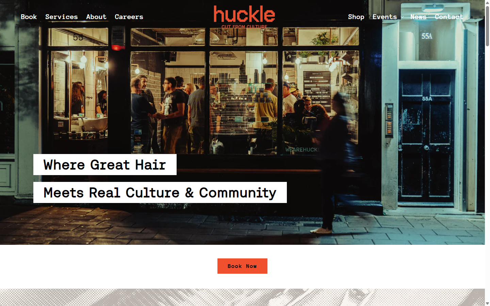
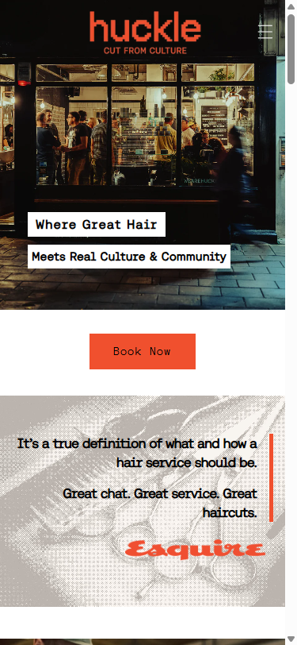

Huckle
London · UKWhy this reference: the cleanest "owner-led, community-anchored shop" example in the lineup. Real shop as the hero photograph. Documentary photography, restrained palette, one loud CTA color.
- Hero
- Documentary photo of actual storefront at night, two-line tagline overlay
- CTA
- "Book Now" — bright orange/red, only saturated color on page
- Palette
- Black / white / cream / warm wood + one bright accent
- Type
- Lowercase wordmark + geometric sans
- Photography
- Real shop, real people, low light, warm tones
Borrow for Z's
- Hero as Z's actual shop photographed at golden hour
- "Where ___ Meets ___" two-line tagline structure
- One saturated accent color, everything else restrained
- Owner-bio narrative section (Z's history, why Westchester, the hot-towel shave story)